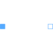
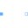

TwoPinTwo pins |

|
Information
This information is part of the Modelica Standard Library maintained by the Modelica Association.
This partial model uses a positive and negative pin and defines the complex voltage difference as well as the complex current (into the positive pin). Additionally, the angular velocity of the quasi stationary system is explicitly defined as variable. This model is mainly intended to be used with graphical representation of user models.
See also
Connectors (2)
| pin_p |
Type: PositivePin Description: Positive quasi-static single-phase pin |
|
|---|---|---|
| pin_n |
Type: NegativePin Description: Negative quasi-static single-phase pin |
Components (2)
| v |
Type: ComplexVoltage Description: Complex voltage |
|
|---|---|---|
| i |
Type: ComplexCurrent Description: Complex current |
Extended by (3)
|  |
Modelica.Electrical.QuasiStationary.SinglePhase.Interfaces Two pins, current through |
|
Modelica.Electrical.QuasiStationary.SinglePhase.Sources Current source with integrated frequency sweep |
|
|
Modelica.Electrical.QuasiStationary.SinglePhase.Sources Voltage source with integrated frequency sweep |